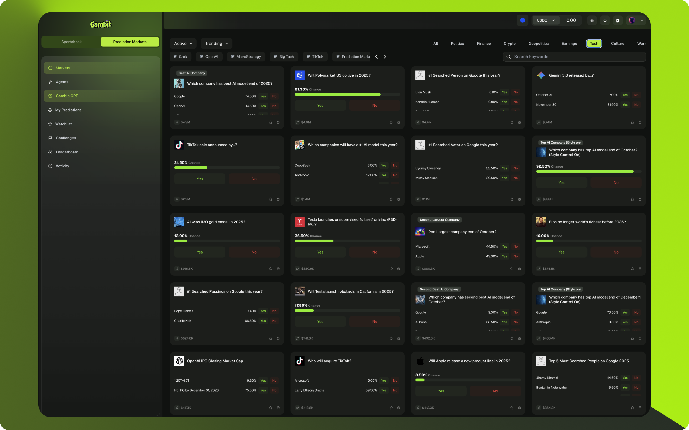
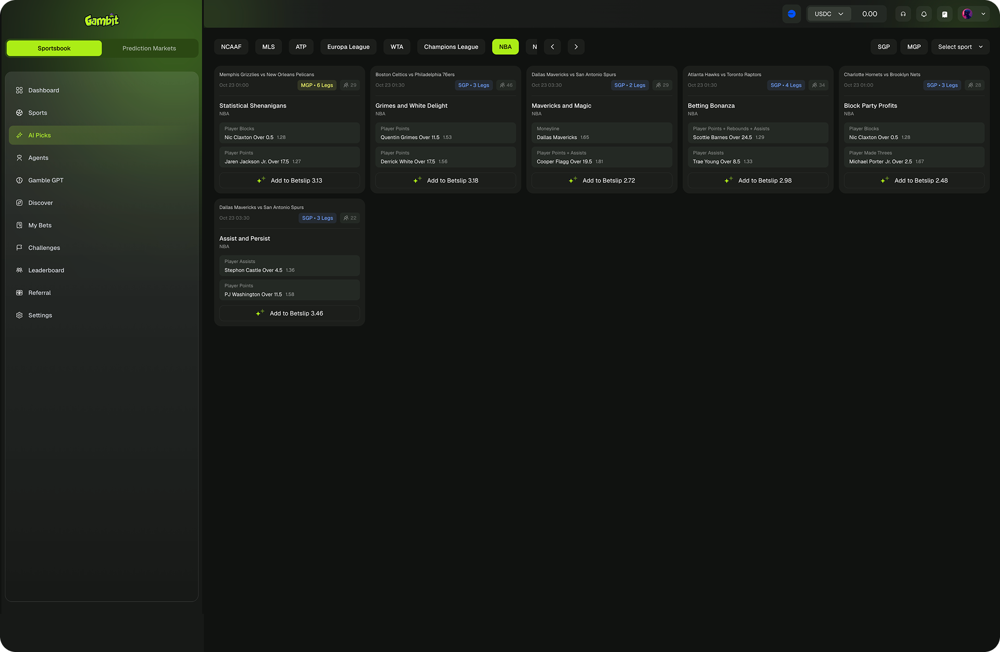

- Role
- Lead product designer
- Focus
- Explainable AI and guided setup
- Period
- Concept to MVP
- Delivery
- Interaction model and reusable patterns
Measurement note: Where quantitative outcomes are shown, they are rounded portfolio-reported project metrics and are not presented as independently audited company disclosures.
My role & scope
I led product design from concept through MVP across problem framing, the interaction model, AI explainability, prototyping and reusable system decisions.
Challenges
The primary challenge was foundational: how to build user trust in a novel, autonomous technology. Prediction markets are already complex. Adding layers of “black-box” AI agents and blockchain architecture created a high barrier to entry for the average user.
The key hurdles were:
- Simplify AI Training: The process of "training an AI" had to be demystified for non-technical users who needed faster, clearer decision support.
- Build Trust: User skepticism had to be overcome by making the AI's performance transparent and its actions understandable.
- Design for Versatility: A single, intuitive interface was needed to cohesively handle diverse and fast-moving markets, from sports and crypto to global events.
- Enable Speed: The design had to let users review time-sensitive picks quickly without hiding confidence, return context, or decision risk.
Key UX Methodologies
To tackle these specific challenges, a focused set of UX methodologies was chosen:
- Jobs-to-be-Done (JTBD): This was the guiding framework. It was clear users weren't "hiring" the product to configure an AI; they were hiring it to make faster, better-informed decisions with less effort, without obscuring uncertainty or encouraging impulsive action. This "job" informed every design decision, shifting the focus from complex features to simple, valuable outcomes.
- Progressive Disclosure: To solve the high barrier to entry, this method was critical. It turned “training an AI” into a short, step-by-step flow in plain language with helpful presets. Users always know where they are and why, which lowers drop-off at setup.
- Lean UX & Iterative Sprints: The project was run from concept to MVP in a series of fast, iterative sprints. Given the novelty of the product, this approach was essential. It allowed the team to get a functional version in front of users quickly, test core assumptions, and adapt based on real-world behavior rather than internal speculation.
- Mental Model Alignment: The design process focused on using plain language and smart defaults. By avoiding technical jargon ("Epochs," "Learning Rate") and instead using simple explanations, the system was designed to match the user's mental model of "making a good pick," not a data scientist's model of "building a neural network."
The Process
The design was led from concept to MVP, focusing on core user flows and building a system that was both scalable and easy to use.
- Homepage as a Decision Surface: The dashboard was redesigned to function as a "decision surface," not a generic landing page. It was built to immediately answer the user's core question: “What should I do today?” This was achieved by surfacing AI-generated picks with clear confidence signals, return context, and a deliberate review path.
- Guided Agent Creation: The agent setup was rebuilt as a clear, step-based flow. It uses smart defaults, plain-language explanations, and light progress cues so users always understand where they are in the process and why each step matters.
- Unified Market View: A single, unified "market card" pattern was introduced. This card contains all critical info live odds, a clear Yes/No action, and return previews allowing users to switch between categories like sports and crypto without having to relearn the interface.
Research & Problem Solving
The design strategy was centered on leveraging the rise of AI agents and DeFi, with a relentless focus on simplicity, personalization, trust, and speed.
- Problem: How do you make complex AI training accessible?
- Solution: A modular workflow was designed with smart defaults and guided training options. This approach successfully turned a potentially complex configuration task into a few simple choices.
- Problem: How do you get users to trust an AI's predictions?
- Solution: Transparency was designed into the system from the start. Transparent performance leaderboards and clear confidence scores for every pick allow users to review and assess an agent's track record before acting on its advice.
- Problem: How do you help users find value in a noisy, fast-moving market?
- Solution: The personalized dashboard was designed to surface ranked picks with visible model-confidence context. This reduced noise while preserving a deliberate review step before any action.
The Outcome
Early product telemetry provided directional—not independently audited—evidence about the guided setup and recommendation flow:
- Activation signal: users completed the agent-creation, recommendation and review journey, supporting the value of progressive disclosure.
- Automation-reliance signal: heavy use of AI-originated recommendations was treated as a risk to monitor, reinforcing the need for visible confidence context, optional detail and a deliberate review step.
Responsible design boundary
This portfolio case focuses on the information architecture and explainability of the MVP. It does not claim that production-grade wagering safeguards were shipped or validated. Before any real-money launch, age and location eligibility, visible model uncertainty, deposit and loss limits, cooling-off and self-exclusion controls, and an accessible help and referral path would be launch requirements, with legal, responsible-gaming and accessibility review.
Behind the Decisions: Reflections & Trade-offs
On SportsGambit, everything came down to the few seconds before someone decides to put money on the line.
We knew two things: more “AI explanation” doesn’t automatically mean more trust, and less information doesn’t automatically mean speed. The job was to design a moment where someone glances at a card and instinctively knows: what the bet is, how confident the system is, and whether they’re comfortable acting on it now.
That’s why we went decision-first: one clear action, then optional depth. Speed never removed the review step: confidence signals, return context, and supporting detail stayed available before action. The team killed a lot of visually interesting concepts because they failed the simple test: “Can a new user land here, understand the story in under five seconds, and still feel like they’re in control of the choice?” If the answer was no, it didn’t ship.


